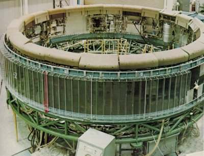
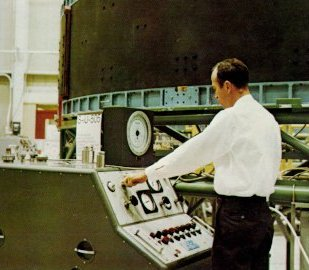
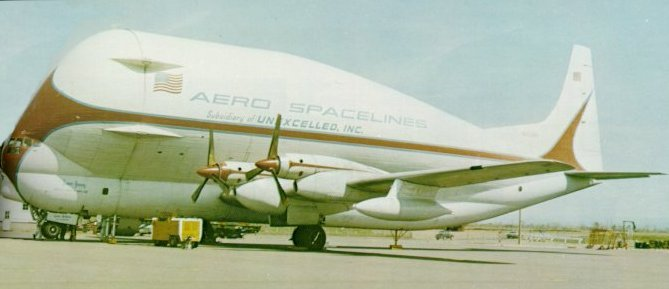
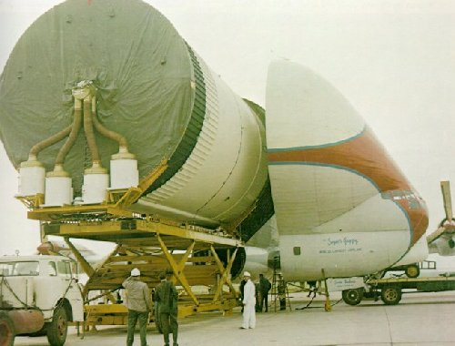
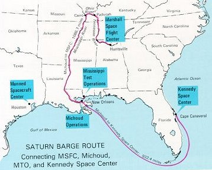
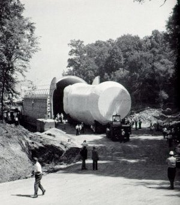
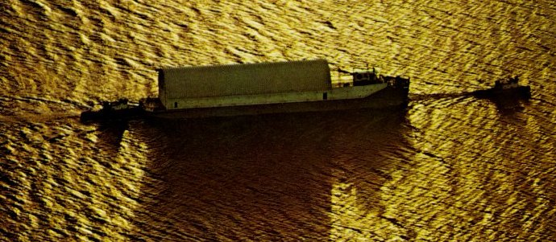

|  |
| An Instrument Unit being readied for checkout at the IBM facility in Huntsville. A cylinder 22.7 feet across and 3 feet high, the structure consists of 24 panels with stiffening rings at the top and bottom. The units that perform the guidance, control, and telemetry functions for the Saturn are mounted to the inside of the cylinder. The foam rubber pads at the top, and the plastic strips around the outside, are for protection during manufacture. |
|  |
| Pressure test during predelivery checkout of an Instrument Unit at the IBM facility. This IU was destined for Saturn vehicle 505, which launched the Apoilo 10 mission. On the launch pad, the IU, which weighs two tons, sits atop the third (S-IVB) stage, with the Apollo spacecraft directly above it. |
|  |
| Super Guppy, bigger sister of the aptly named Pregnant Guppy, was the only airplane in the world capable of carrying a complete S-IVB stage. Both aircraft were built by John M. Conroy, who started with the fuselages of two surplus Boeing C-97 Stratocruisers, ballooned out the upper decks enormously, and hinged the front sections so that they could be folded back 110 degrees. Super Guppy flew smoothly at a 250-mph cruising speed, and its cargo deck provided a 25-foot clear diameter. Below, a finished S-IVB stage is being unloaded onto a cargo lift trailer at Kennedy Space Center. |
|  |
|  |  |
| Bulky but fragile, huge launch-vehicle stages could not travel by rail or public road; tunnels, bridges, and low wires would have dictated endless detours. Right, even a comparatively small Saturn I wasn't easy to back into its barge at Huntsville. Below, a rocket-laden barge is escorted by two tugs through Sun-bronzed waters. The biggest California-built parts of Saturn V voyaged by ship through the Panama Canal and across the Gulf of Mexico. |
|  |